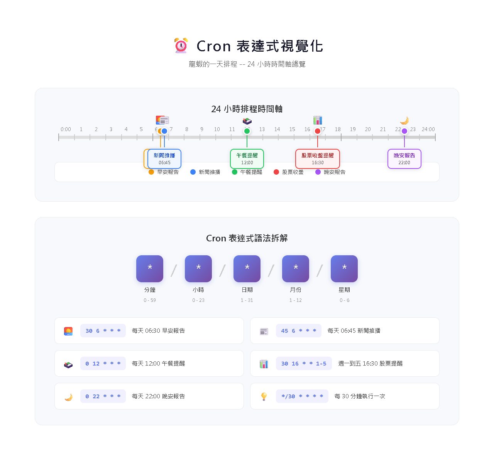
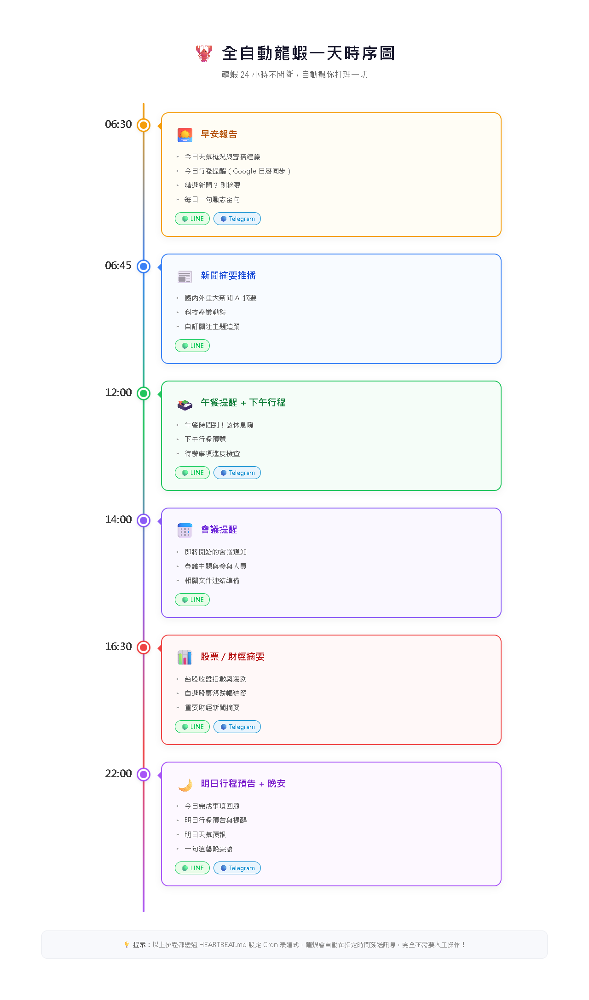
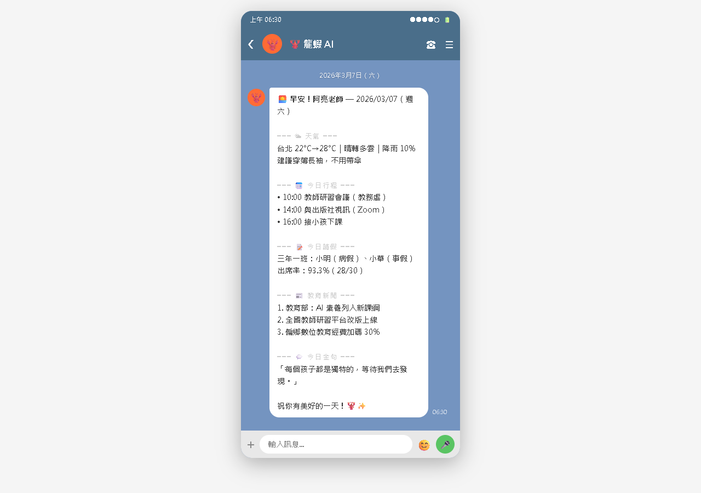
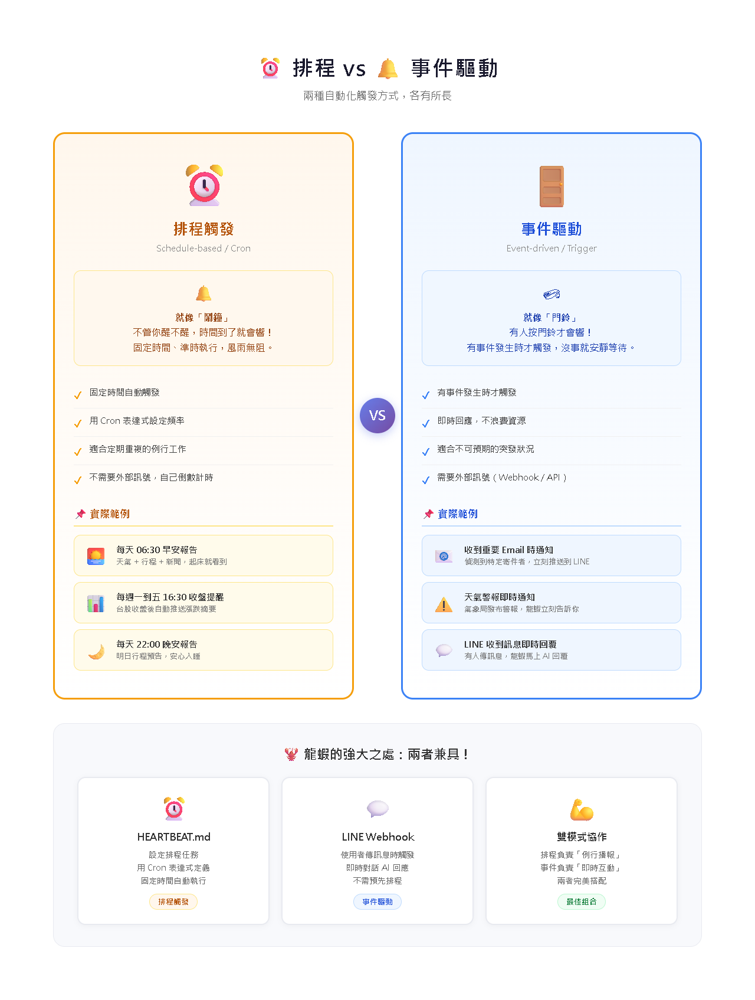

AI Agent 自主代理三王實戰
從「被動 AI」進化到「主動 AI」——不用你開口，龍蝦就會自動幫你做事
在 CH16 學過基礎，現在來看完整的語法：
## 任務名稱 - 排程: <cron 表達式 或 自然語言> - 通道: <要推播到哪個通道> - 對象: <推播給誰（用戶 ID 或群組 ID）> - 動作: <要做什麼> - 條件: <（可選）什麼情況下才執行> - 靜默: <（可選）true/false，不回報執行結果>
什麼時候做？Cron 表達式或自然語言
結果推到哪裡？LINE / Discord / Telegram
做什麼？什麼情況才做？

分 時 日 月 星期| Cron 範例 | 意思 | 自然語言寫法 |
|---|---|---|
0 8 * * * | 每天早上 8:00 | 每天 08:00 |
30 12 * * 1-5 | 平日中午 12:30 | 平日 12:30 |
0 9 * * 1 | 每週一早上 9:00 | 每週一 09:00 |
0 0 1 * * | 每月 1 號凌晨 | 每月 1 號 00:00 |
*/30 * * * * | 每 30 分鐘 | 每 30 分鐘 |
0 8,12,18 * * * | 每天 8/12/18 點 | 每天 08:00, 12:00, 18:00 |
## 每日天氣（推送到 LINE） - 排程: 每天 07:30 - 通道: line - 對象: U1234567890abcdef（你的 LINE User ID） - 動作: 查詢今天的天氣並推播 ## 群組早安（推送到 LINE 群組） - 排程: 每天 08:00 - 通道: line - 對象: C1234567890abcdef（群組 ID） - 動作: 傳送早安問候和今日重點新聞
## 下雨提醒 - 排程: 每天 06:30 - 條件: 今天有降雨機率 > 50% - 動作: 提醒帶傘，並告知降雨時段 ## 股票警報 - 排程: 每 30 分鐘（平日 09:00-13:30） - 條件: 台積電股價跌破 800 或漲破 900 - 動作: 推播股價變動通知

天氣穿衣建議、今日行程、重點新聞 3 則、勵志小語
下午行程提醒、天氣建議是否適合外出午餐
今日完成事項、未完成清單、明日行程預覽
今日重點新聞 5 則、輕鬆語氣說晚安

龍蝦（LINE 07:30）
☀️ 早安老師！今天是 3/8（六）
🌤️ 天氣：24°C，多雲轉陣雨
🧥 穿著建議：薄外套，帶傘
📅 今日課表：
1. 08:00-09:30 三年甲班 數學
2. 10:00-11:30 三年乙班 數學
3. 13:30-15:00 教師研習
📋 學生請假：
- 王小明（三甲）感冒請假
💡「教育是點燃火焰，而非灌滿水桶。」— 葉慈
不只是生活助手，龍蝦也能當你的系統管理員：
## 磁碟空間檢查
- 排程: 每週日 03:00
- 靜默: true
- 動作: |
檢查 C: 和 D: 的剩餘空間。
如果任一磁碟剩餘空間 < 10GB，推播通知。
否則不用回報。
## 龍蝦健康檢查
- 排程: 每天 04:00
- 靜默: true
- 動作: |
執行 openclaw doctor 自我檢查。
如果有任何異常，推播到 LINE 通知。
正常的話不用回報。
## 備份提醒
- 排程: 每月 1 號 09:00
- 通道: line
- 動作: 提醒進行每月資料備份
靜默: true，正常不打擾你，有異常才通知。

| 類型 | 排程（定時） | 事件驅動 |
|---|---|---|
| 觸發方式 | 固定時間 | 特定事件發生時 |
| 範例 | 每天 8 點報天氣 | 收到 Email 時自動摘要 |
| 比喻 | ⏰ 鬧鐘 | 🔔 門鈴 |
| 事件 | 觸發條件 | 範例用途 |
|---|---|---|
email-received | 收到新 Email | 自動摘要重要信件 |
calendar-event | 行事曆即將開始 | 提前 15 分鐘提醒 |
file-changed | 資料夾有新檔案 | 自動整理下載檔案 |
webhook-received | 收到外部 Webhook | GitHub Issue 自動回覆 |
keyword-detected | 訊息含特定關鍵字 | 特殊指令觸發 |
price-alert | 股價/匯率觸發條件 | 投資警報 |
| 欄位 | 必填 | 值的類型 | 說明 |
|---|---|---|---|
| 事件 | ✅ | 固定關鍵字（見上頁） | 要監聽的事件名稱 |
| 條件 | 選填 | 自然語句 | 額外篩選條件，龍蝦自行判讀 |
| 通道 | 選填 | 固定：line、telegram、discord | 推播到哪個通道 |
| 靜默 | 選填 | true / false | true = 不推播，背景執行 |
| 動作 | ✅ | 自然語句（| 可寫多行） | 告訴龍蝦要做什麼 |
## 你的任務名稱
- 事件: email-received ← 固定關鍵字，從上頁表格選一個
- 條件: 你的篩選條件 ← 自然語句，省略則全部觸發
- 通道: line ← line / telegram / discord，省略用預設
- 靜默: false ← true 不推播 / false 推播
- 動作: | ← 用口語描述龍蝦要做什麼
第一行描述...
第二行描述...
## Email 自動摘要
- 事件: email-received
- 條件: 寄件者是老闆（boss@company.com）
- 動作: |
自動讀取信件內容，產生摘要，
並推播到 LINE 告訴我：
「老闆寄了一封信：[摘要]，需要回覆嗎？」
## 行程提前提醒
- 事件: calendar-event
- 條件: 事件開始前 15 分鐘
- 通道: line
- 動作: |
推播提醒：
「15 分鐘後有行程：[事件名稱]，在 [地點]。」
## 下載資料夾自動整理
- 事件: file-changed
- 條件: 下載資料夾有新檔案（Win: C:\Users\你\Downloads\、Mac/Linux: ~/Downloads/）
- 靜默: true
- 動作: |
檢查新下載的檔案類型：
- PDF → 移到 文件/PDF/
- 圖片 → 移到 圖片/下載/
- ZIP → 移到 壓縮檔/
## GitHub Issue 自動回覆
- 事件: webhook-received
- 條件: 來源是 GitHub，事件類型 issues.opened
- 動作: 自動判斷 bug/feature，友善初始回覆
11 / 14
假設你是老師兼 YouTube 頻道經營者，完整的 HEARTBEAT.md 會這樣運作：
「今天降雨機率 80%，記得帶傘！也提醒學生帶雨具喔。」
早安報告：天氣 + 課表 + 請假學生 + 教學金句
「教育局來信！主旨：教師研習計畫。需要在週五前報名。要幫你回覆嗎？」
今日教學摘要：上課紀錄 + 出缺席統計 + 明天課表
教學週報：上課時數 + 出缺席統計 + YouTube 本週表現
月度回顧：出缺席總表 + YouTube 數據 + 下月重要日期
| 原則 | 說明 |
|---|---|
| 合併通知 | 把同一時段的多個通知合併成一則 |
| 善用條件 | 加條件過濾，不要每次都推播 |
| 善用靜默 | 背景任務用靜默模式，有異常才通知 |
| 分級重要性 | 重要的即時推播，不重要的收到週報裡 |
| 任務 | 預估每次消耗 | 每月成本 |
|---|---|---|
| 天氣查詢 | ~500 tokens | 每天 1 次 ≈ $0.5/月 |
| 新聞摘要 | ~2000 tokens | 每天 1 次 ≈ $2/月 |
| Email 摘要 | ~1000 tokens/封 | 看 Email 量 |
| 週報 | ~3000 tokens | 每月 4 次 ≈ $0.5/月 |
openclaw heartbeat run "早安報告"這一章讓龍蝦變成了全自動管家——定時任務、事件驅動、條件觸發，全部搞定。
龍蝦不只會聊天、打電話、管排程——下一章要讓它長出真正的眼睛！用 YOLO6 即時物件偵測，實現智慧點名、安全監控、物品盤點。